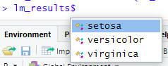

library(dplyr)
library(purrr)
iris_df <- datasets::iris %>% as_tibble()
lm_formula <- formula("Petal.Length ~ Petal.Width")
lm_results <- iris_df %>%
group_by(Species) %>%
group_map(function(dat, group) {
lm(lm_formula, data = dat)
})The group_map() function is one of my favourite iterative functions within the purrr package. Like the other iterative functions within the purrr-verse, it has been designed to be simple and intuitive.
In a nutshell, group_map() applies a function over each group of a grouped dataframe and returns a list containing the function result per group. This is great when we want to…well apply a function on a per group basis.
As a quick example, say we want to run a regression to pedict petal length with petal width for each class of species using data in the iris dataset. A group_map() will allow you to do this, and save the outcome in one object so that you can quickly access each regression outcome.
And now we can quickly access our lm results by calling lm_results. Combining this with broom’s tidy in a map() means you can quickly see the key results of each regression.
map(lm_results, broom::tidy)[[1]]
# A tibble: 2 × 5
term estimate std.error statistic p.value
<chr> <dbl> <dbl> <dbl> <dbl>
1 (Intercept) 1.33 0.0600 22.1 7.68e-27
2 Petal.Width 0.546 0.224 2.44 1.86e- 2
[[2]]
# A tibble: 2 × 5
term estimate std.error statistic p.value
<chr> <dbl> <dbl> <dbl> <dbl>
1 (Intercept) 1.78 0.284 6.28 9.48e- 8
2 Petal.Width 1.87 0.212 8.83 1.27e-11
[[3]]
# A tibble: 2 × 5
term estimate std.error statistic p.value
<chr> <dbl> <dbl> <dbl> <dbl>
1 (Intercept) 4.24 0.561 7.56 0.00000000104
2 Petal.Width 0.647 0.275 2.36 0.0225 Here you may notice the key issue for which this week’s blog post is designed to address: How can you tell which result corresponds to which group?
The solution is reasonably simple: Create a list that contains the lm object and set the element names of the list to be the current group.
lm_results <- iris_df %>%
group_by(Species) %>%
group_map(function(dat, group) {
model <- lm(lm_formula, data = dat)
# Place the lm model into a list and set the name to be the current group
list(model) %>%
setNames(group$Species)
})
lm_results[[1]]
[[1]]$setosa
Call:
lm(formula = lm_formula, data = dat)
Coefficients:
(Intercept) Petal.Width
1.3276 0.5465
[[2]]
[[2]]$versicolor
Call:
lm(formula = lm_formula, data = dat)
Coefficients:
(Intercept) Petal.Width
1.781 1.869
[[3]]
[[3]]$virginica
Call:
lm(formula = lm_formula, data = dat)
Coefficients:
(Intercept) Petal.Width
4.2407 0.6473 And now you can see which lm model corresponds to which species group. However what this has done is added each named list element to the list that is created by group_map(). So while we can see in our output which element of lm_results contains which lm model, we cannot easily access these elements with the $ operator, nor can we quickly iterate over each element like we could do previously.
Thankfully, the solution again is simple: if we use flatten() on our group_map() result, it will remove the nested layers that have in our list and put all the elements in one single layer.
lm_results <- flatten(lm_results)
lm_results$setosa
Call:
lm(formula = lm_formula, data = dat)
Coefficients:
(Intercept) Petal.Width
1.3276 0.5465
$versicolor
Call:
lm(formula = lm_formula, data = dat)
Coefficients:
(Intercept) Petal.Width
1.781 1.869
$virginica
Call:
lm(formula = lm_formula, data = dat)
Coefficients:
(Intercept) Petal.Width
4.2407 0.6473 And now we all of our regression results packaged neatly into one, with each element clearly labelled as so:
